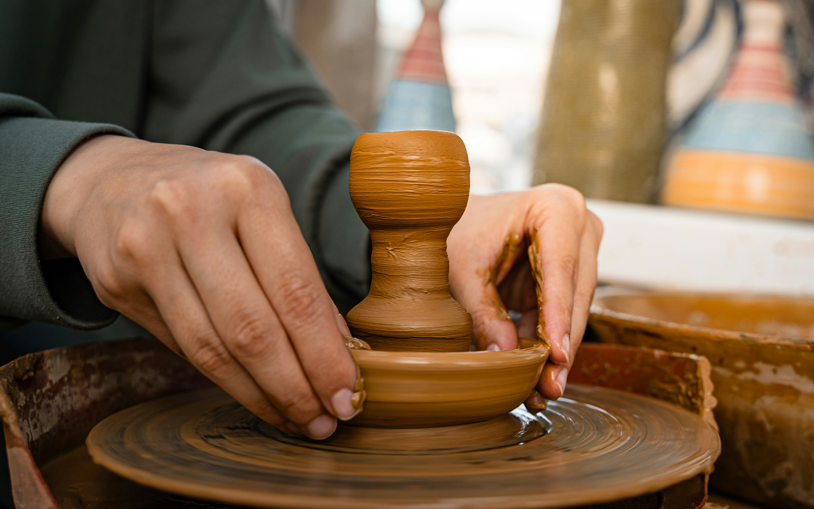
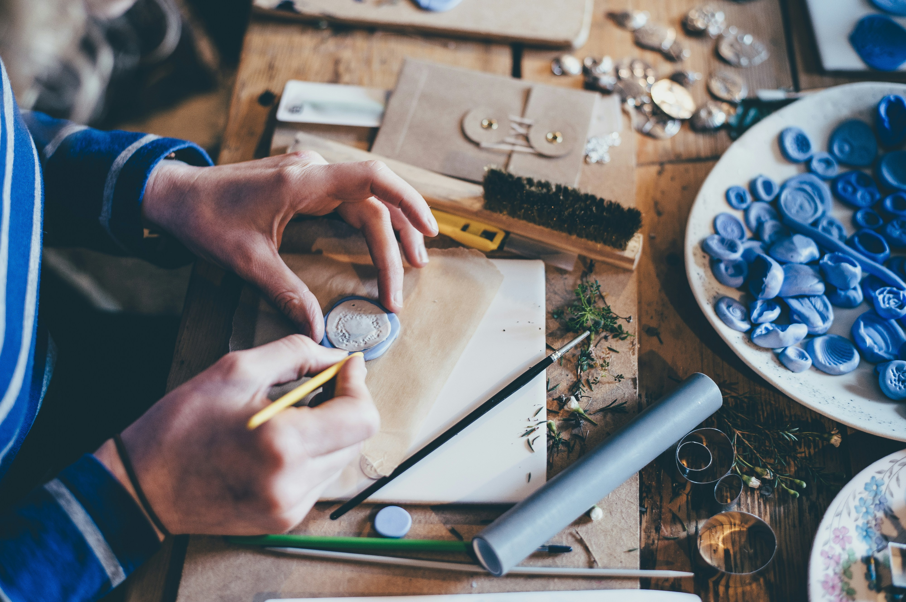

La artesanía forma parte de la memoria cultural de muchos pueblos y ciudades. Cada pieza elaborada a mano conserva una historia, una técnica y una forma de entender el trabajo que se transmite de generación en generación.
Estas jornadas nacen con la intención de acercar los oficios artesanos a la ciudadanía. No se trata solo de observar productos terminados, sino de comprender el proceso, los materiales y el tiempo que hay detrás de cada creación.

“La artesanía nos recuerda que crear con las manos también es una forma de cuidar la cultura.”
El programa combina actividades para todos los públicos: desde charlas divulgativas hasta talleres de iniciación donde los asistentes podrán experimentar con materiales como barro, cuero, madera o fibras naturales.
- Charlas con artesanos invitados.
- Talleres prácticos para jóvenes y adultos.
- Demostraciones en directo de técnicas tradicionales.
- Espacios de encuentro entre profesionales y visitantes.

Además de su valor cultural, la artesanía también ofrece una mirada más sostenible sobre el consumo. Frente a la producción rápida, los oficios manuales proponen piezas duraderas, cercanas y elaboradas con atención al detalle.
Con esta iniciativa, el ayuntamiento quiere impulsar la participación ciudadana y dar visibilidad a los profesionales que mantienen vivos estos saberes. Las jornadas buscan ser un punto de encuentro entre tradición, creatividad y comunidad.